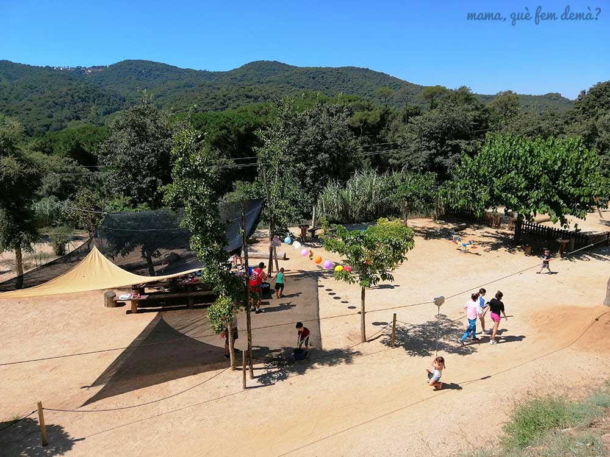

Canyamars

Por qué me gusta?
Por la zona done está ubicado, ya que es una zona rural donde hay acceso directo a la naturaleza, parques para los más pequeños, entre otros lugares de interés. Además de una granja (Can Gel), la cual se puede visitar en forma de visita guiada
Granja.
Cosas que se pueden hacer
-
Interacción con Animales: En Can Gel, los niños pueden aprender sobre el cuidado de los animales, alimentarlos y participar en actividades lúdicas que fomentan el aprendizaje sobre la vida en una granja. Las visitas incluyen la oportunidad de ver vacas lecheras y terneros de cerca.
-
Visitas Guiadas: La granja ofrece visitas guiadas que permiten a las familias conocer el proceso de producción láctea y la vida diaria en el campo. Estas actividades son ideales para enseñar a los niños sobre la agricultura y la sostenibilidad.
-
Entorno Natural: Canyamars está rodeado de naturaleza, lo que permite disfrutar de paseos al aire libre y explorar los paisajes locales. Esto es perfecto para hacer senderismo o simplemente disfrutar de un día en familia.
-
Zonas Recreativas: Can Gel cuenta con una zona de descanso equipada con mesas de picnic y una zona de juegos tematizada, ideal para que los niños se diviertan mientras esperan el inicio de la visita.